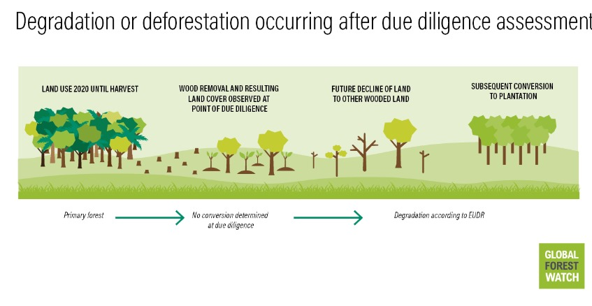

By Ruth Nogueron, November 13 2023
In May 2023, the European Union (EU) adopted a regulation, the EU Deforestation Regulation (EUDR), that requires companies to show that commodities placed on the EU market are deforestation- or degradation-free.
Under the regulation, products and commodities linked to deforestation or forest degradation after December 31, 2020, are not permitted in EU markets. The commodities required to be deforestation-free are cattle, cocoa, coffee, palm oil, soy and rubber, as well as derived products such as beef and chocolate. Wood and derived products such as furniture must also be degradation-free. (Although rubber is included with the Food and Agriculture Organization of the United Nations [FAO] definition of a forest, under the EUDR it is considered an agricultural commodity and as such is required to be deforestation- rather than degradation-free.)
According to the FAO and definitions used in the EUDR, land used for wood production (excluding agroforestry systems) remains forest even if it is temporarily unstocked with trees (i.e. trees have been harvested and the land is left to naturally regenerate or seedlings have been or are yet to be planted). Therefore, forests that are harvested for wood are not considered to be deforested unless they are converted to agricultural use. To ensure all covered commodities — both imported and domestically produced — are in compliance with the regulation, companies need to monitor the full supply chain from source (the actual place of wood harvesting) to the product being placed on the market. The EUDR requires suppliers to provide the geocoordinates of plots of land where the wood was grown and harvested, and to provide due diligence information for all these locations that demonstrates that the wood was not from land where deforestation occurred after December 2020, nor where forest degradation occurred after that date.
In this blog, we explore the regulation and describe relevant data and tools — specifically those available on Global Forest Watch (GFW) — that companies, governments and others can use to establish whether wood products are degradation-free, while highlighting areas where new data can improve assessments in the future.
The EUDR defines degradation as structural changes to the forest in the form of:
The EUDR’s definition of degradation is based on the following definitions of forest types:
Primary Forest:
Naturally regenerated forest of native tree species where there are no clearly visible indications of human activities and the ecological processes are not significantly disturbed.
Naturally regenerating forest:
Forest predominantly composed of trees established through natural regeneration, including: forests for which it is not possible to distinguish whether planted or naturally regenerated; forests with a mix of naturally regenerated native tree species and planted or seeded trees, and where the naturally regenerated trees are expected to constitute the major part of the growing stock at stand maturity; coppice (areas where trees are cut down to stumps) from trees originally established through natural regeneration; and naturally regenerated trees of introduced species.
Other wooded land:
Land not classified as forest spanning more than 0.5 hectares with trees higher than 5 meters and a canopy cover of 5-10%; or trees able to reach these thresholds in situ; or with a combined cover of shrubs, bushes and trees above 10% excluding land that is predominantly under agricultural or urban land use.
Plantation forest:
A planted forest that is intensively managed and at planting and stand maturity meets all the following criteria: one or two species, even age class and regular spacing. It includes short rotation plantations for wood, fiber and energy, and excludes forests planted for protection or ecosystem restoration, as well as forests established through planting or seeding which at stand maturity resemble or will resemble naturally regenerating forests.
Planted forest:
Forest predominantly composed of trees established through planting and/or deliberate seeding where the planted or seeded trees are expected to constitute more than 50% of the growing stock at maturity. It includes coppice from trees that were originally planted or seeded.
Although the definitions of forest types in the regulation are generally based on FAO definitions, the degradation definition is specific to the EUDR since the FAO does not use one single degradation definition. The EUDR definition differs from other definitions of degradation, which tend to focus on a reduction in forest quality or health rather than a structural change from one forest type to another. Information on forest quality and health is not considered as part of the EUDR, but can provide a more nuanced view of the status of the world’s forests. There are two scenarios that are relevant from the perspective of monitoring:
First, conversion of either primary or naturally regenerating forest to a type that results in degradation or deforestation takes place between 2020 and the due diligence assessment. Wood harvesting, fires, tree planting and other activities can result in that change of forest type. Harvested wood sourced from the resulting forest or land type cannot be placed on the EU market. This includes conversion to agroforestry (such as silvopasture) where wood is harvested, which would be considered deforestation. Second, and more complicated, is where no conversion has yet taken place. However, harvesting and related activities could result in conversion to one of the forest types that would be considered degradation, or conversion may be delayed following harvesting. This challenge (explored more below) is that degradation is not always observable at the time of harvest and due diligence assessments and may take years to detect. Operators should use the best available data at the time of due diligence to determine whether wood can be placed on the EU market or not. There is no expectation to predict the future, which means that delayed degradation after harvesting will not be captured by the due diligence process.
GFW data can be used to support degradation assessments for the EUDR. Here are three examples:
Identifying primary forests and naturally regenerating forests as a baseline for measuring change
Several data layers on GFW can be useful for identifying primary forests. For the tropics, the extent of primary forests in 2001 is available, which shows mature natural humid tropical forest cover that has not been completely cleared and regrown in recent history. This largely aligns with the regulation’s definition of forests of native species with no clearly visible indications of human activities. Users can produce a proxy primary forest map for 2020 by removing tree cover loss between 2001 and 2020. will Tree cover loss does capture natural disturbances, meaning some primary forests will be excluded, but overall, these natural losses typically do not account for a large proportion of loss. At the global scale, the Science Based Targets Network (SBTN) Natural Lands Map provides a conservative proxy for primary and naturally regenerating forests. This map is informed by primary forest maps, such as the Intact Forest Landscapes layer on GFW and the European primary forest database, which form part of the natural forest class layer for the year 2020. The natural forest class largely aligns with the EUDR’s primary and naturally regenerating forest definitions, and is based on areas with tree cover greater than or equal to 5 meters in height spanning more than 0.5 hectares, and excludes plantations, trees in urban areas and some agricultural landscapes. However, the regulation acknowledges that there is difficulty in distinguishing between forest types, meaning alignment is difficult to determine. Users should be cautious and conservative when assessing potential conversion of these areas following wood extraction. In the future however, GFW aims to host a global primary forest map to better align with the EUDR’s requirements.
Identifying planted forests, plantations and other wooded lands
To determine if prohibited conversions have occurred, those conducting due diligence assessments need to be able to identify planted forests, plantations and OWL. GFW’s tree plantation layer, based on the Spatial Database of Planted Trees, provides locations of plantations and planted forest in select countries around the world. Although the data set has an approximate timeframe of 2015, it is periodically updated as new data becomes available, including some data from 2020 or later. A new version that will be released in late 2023 is largely aligned with 2020 or later. Information such as the date of the plantation establishment is sometimes available and can support conversion assessments. Plantation and planted forest fall outside of the SBTN Map’s natural forest class layer. Other wooded land since 2020 is more difficult to isolate using GFW data. The SBTN Map’s natural forest class layer — and the tree cover height data from the University of Maryland and available on GFW that it’s based on — only includes tree cover with a canopy cover greater than approximately 23%. However, data on canopy cover density, available for 2000 and 2010 (with 2020 expected in future) could be used to specifically identify areas below 10%, and therefore could identify OWL that has tree cover (OWL can include areas such as shrubland without trees).
Monitoring conversion of primary and naturally regenerating forests
Under EUDR, wood can be harvested from primary and naturally regenerating forests. However, to avoid structural changes that count as degradation, primary forests must be allowed to naturally regenerate, and subsequently, naturally regenerating forests can be replanted but cannot be converted to plantations or OWL. Annual tree cover loss from 2021 onwards and near-real-time forest disturbance alerts for the tropics can be indicators of wood harvesting. Annual tree cover loss shows large areas of removals such as clear cuts at 30-meter resolution, and near-real-time data, available at 10-meter resolution, can better identify activities like selective harvesting. Although different levels of wood harvesting (from clear cutting to selective logging) are permitted provided a change of forest type has not occurred, in many cases, forests that have been selectively harvested are more likely to naturally regenerate than clear cuts. Areas where clear cuts are detected may be investigated further to identify if regrowth is occurring. Visual assessments of high-resolution satellite images, such as those from Planet and available on GFW, can be used to identify whether conversion to another forest type is taking place. These images can show activities like removal of stumps, digging of drainage ditches and use of fire to clear land that could indicate conversion. These images may also show signs of recovery in forests where growth is fast, such as in rainforests.
Since EUDR’s definition of degradation and monitoring requirements do not cover many other widely used degradation indicators related to forest health and quality, one major concern is that wood harvesting from primary forests is permitted (as long as the EUDR’s specific definition of degradation is avoided), but that this leads to a loss of primary forests since primary forests should have “no clearly visible indications of human activities.” Conversion of these forests is the subject of many international regulations which seek to avoid irreversible loss of these valuable habitats.
In addition, the timing of due diligence assessments means that even degradation that falls under the regulation’s definition but occurs after the due diligence assessments have taken place will not be captured. Because due diligence statements should be prepared prior to placing wood or wood products on the EU market, it means that land can be temporarily unstocked at the time of reporting, and reporting could be completed before land is subsequently converted to another forest type, or even to another land use.
Even forests that after harvesting are left alone to naturally regenerate may not do so — studies show that forests are becoming less resilient to changes due to pollution, overharvesting and climate change among other pressures, limiting recovery potential. Tipping points may be induced after which forests cannot recover, but this point is often reached after many years of over harvesting. Support for forest managers to work using sustainability principles should accompany regulations and will lead to healthier forests that are more likely to be able to recover and maintain their ecosystem services after wood extraction. At the same time, long-term monitoring is required to better understand whether degradation occurs following due diligence.
GFW provides useful information for EUDR forest degradation assessments, but we are constantly evaluating data better suited to this purpose for incorporation into the platform. We are assessing several upcoming data sets in this context, including the data from the upcoming EU Forest Observatory (read more here). At the same time, GFW, WRI and partners are producing new data to incorporate onto GFW that can provide more nuanced information on degradation, such as forest quality and health over time.